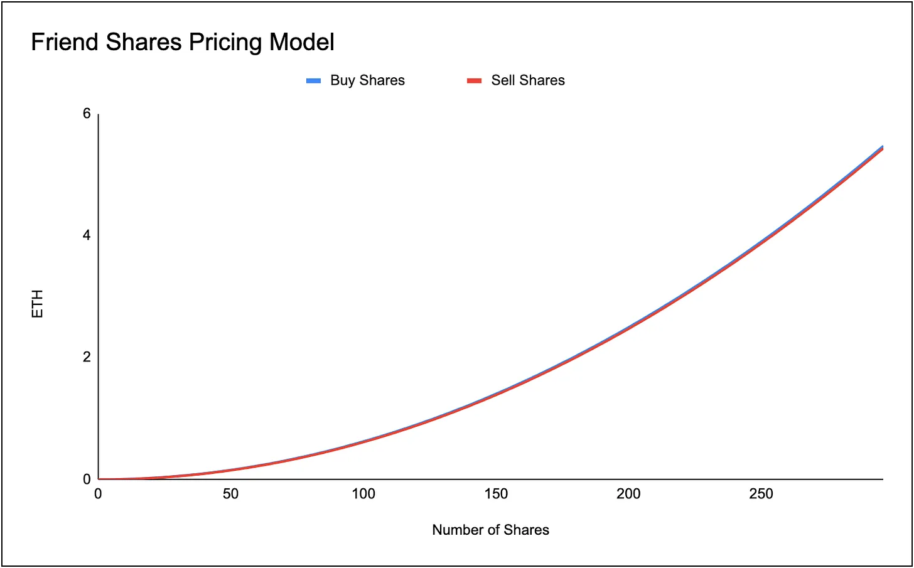

Overview
friend.tech is an on-chain social networking platform built on Base. It allows users to create shares of themselves. These shares can be bought and sold by other users.
The app is mobile based; users will need to open the website on their phone and add it to their home screen (iOS 16.6 is required for iPhone users).
friend.tech is an on-chain social networking platform built on Base. It allows users to create shares of themselves. These shares can be bought and sold by other users.
The app is mobile based; users will need to open the website on their phone and add it to their home screen (iOS 16.6 is required for iPhone users).
How To Get Started:
1. Users first sign up to friendtech through friend.tech.
2. They will then have to add this app to their home page (bypassing the punitive fees app stores charge)
3. Users can sign up to the site using their phone number, Gmail account or via Apple. Apple enables some additional privacy as they can use their email privacy relay.
4. Users are then asked to connect their Twitter account as a sort of proof of personhood.
5. friendtech then gives each user a specific deposit address on the BASE network . Users need to fund their account with a minimum of 0.01 ETH to get started.
6. Once they have funded their friendtech account with ETH, they can access the platform.
7. Upon accessing the app, users are given one free purchase of their own friend shares.
8. Users can browse friends shares in three distinct columns; Top, Most Active & Recently Joined.
9. MechanicsEach share is not an ERC20 token, however, it closely resembles an ERC20 token with similar contract functions.
1. Users first sign up to friendtech through friend.tech.
2. They will then have to add this app to their home page (bypassing the punitive fees app stores charge)
3. Users can sign up to the site using their phone number, Gmail account or via Apple. Apple enables some additional privacy as they can use their email privacy relay.
4. Users are then asked to connect their Twitter account as a sort of proof of personhood.
5. friendtech then gives each user a specific deposit address on the BASE network . Users need to fund their account with a minimum of 0.01 ETH to get started.
6. Once they have funded their friendtech account with ETH, they can access the platform.
7. Upon accessing the app, users are given one free purchase of their own friend shares.
8. Users can browse friends shares in three distinct columns; Top, Most Active & Recently Joined.
9. MechanicsEach share is not an ERC20 token, however, it closely resembles an ERC20 token with similar contract functions.
Wallet to Account Linkage
You can use this URL to reverse engineer the friendtech wallet <> Twitter account connection, by altering the username as the end of the URL:
https://prod-api.kosetto.com/search/users?username=0xRacerAlt
You can use this URL to reverse engineer the friendtech wallet <> Twitter account connection, by altering the username as the end of the URL:
https://prod-api.kosetto.com/search/users?username=0xRacerAlt
Share Pricing Model
Each friend share is priced using a quadratic bonding curve with the only real variable impacting price being the number of shares outstanding.
Each share is priced purely on the number of shares in supply and as the number of shares goes up, the price of each share in ETH goes up.
Price in ETH = supply ^ 2 / 16000
Each friend share is priced using a quadratic bonding curve with the only real variable impacting price being the number of shares outstanding.
Each share is priced purely on the number of shares in supply and as the number of shares goes up, the price of each share in ETH goes up.
Price in ETH = supply ^ 2 / 16000

We made a sheet to model the pricing of shares which you can access here:
Spread

There is a spread on the buying and selling of shares. For example, if we assume Cobie has 200 shares outstanding, each share would then be worth 2.5 ETH (to buy). However, if you were to sell Cobie shares at 200 outstanding supply you would only be able to get 2.47 ETH.
The sell price here is just the buy price minus what you are trying to sell (so the buy price for the 199th share). Therefore, the seller would lose 0.03 ETH to spread.
As you can see, at a low number of outstanding shares, the spread as a % of sale price is relatively large and thus if you buy shares of people with only 1 or 2 shares and instantly sell, you may lose a decent chunk of your capital.
Fees
friendtech takes a 10% fee on volumes with 5% of this fee going to the friend share owner (E.g. is someone bought 1 Cobie share for 2 ETH, Cobie would get 2 ETH * 0.05 = 0.1 ETH). The other 5% goes to the friendtech treasury.Pulling data from Base chain we can see that so far the friendtech treasury has amassed 189 ETH ($348,705).
The sell price here is just the buy price minus what you are trying to sell (so the buy price for the 199th share). Therefore, the seller would lose 0.03 ETH to spread.
As you can see, at a low number of outstanding shares, the spread as a % of sale price is relatively large and thus if you buy shares of people with only 1 or 2 shares and instantly sell, you may lose a decent chunk of your capital.
Fees
friendtech takes a 10% fee on volumes with 5% of this fee going to the friend share owner (E.g. is someone bought 1 Cobie share for 2 ETH, Cobie would get 2 ETH * 0.05 = 0.1 ETH). The other 5% goes to the friendtech treasury.Pulling data from Base chain we can see that so far the friendtech treasury has amassed 189 ETH ($348,705).
Protocol Stats
As of 11-08-2023, friend.tech has had:
Cumulative ETH volume: 3,780 ETH
Users: ~9000 Users
Number of TXs: 97,859
Total Fees (10% of volume): 378 ETH
Fees to Protocol: 189.1 ETH
Fees Distributed: 189.1 ETH
As of 11-08-2023, friend.tech has had:
Cumulative ETH volume: 3,780 ETH
Users: ~9000 Users
Number of TXs: 97,859
Total Fees (10% of volume): 378 ETH
Fees to Protocol: 189.1 ETH
Fees Distributed: 189.1 ETH
Taking each ‘buy share’ function that cost 0, we can get work out the number of users who have joined the platform (since each user has to mint 1 share of themselves with zero cost). So far, we have seen the platform grow to 9,302 users in the past 4 days. Most of that growth came over the past day however as friendtech began to circulate on Twitter.

Disclaimer:
The information and services above are not intended to and shall not be used as investment advice.You should consult with financial advisors before acting on any of the information and services. ASXN and ASXN staff are not investment advisors, do not represent or advise clients in any matter and are not bound by the professional responsibilities and duties of a financial advisor.Nothing in the information and service, nor any receipt or use of such information or services, shall be construed or relied on as advertising or soliciting to provide any financial services.
The information and services above are not intended to and shall not be used as investment advice.You should consult with financial advisors before acting on any of the information and services. ASXN and ASXN staff are not investment advisors, do not represent or advise clients in any matter and are not bound by the professional responsibilities and duties of a financial advisor.Nothing in the information and service, nor any receipt or use of such information or services, shall be construed or relied on as advertising or soliciting to provide any financial services.